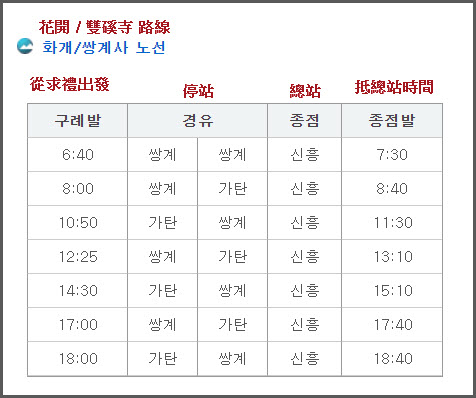

早上六時半起床, 拉開窗簾看看, 窗外正下著大雨, 連忙看看韓國氣象廳的中期天氣預測, 仍然維持未來幾天都是下雨。我們在順天逗留的三天主要安排了以下的幾個重點行程:
看看行程, 除了麗水靈鷲山外, 因為要攀山, 必須在好天氣前往, 其餘的行程都勉強可以在下雨天前往, 只是風景不美、拍攝不便, 遊興大減而已。所以, 其實今天只有兩個選擇: 求禮蟾津江櫻花路及花開十里櫻花路, 或寶城大韓茶園。
但是, 如何決定呢? 想了一會, 還是由韓國氣象廳的今天地區天氣預測來決定吧!
接著馬上瀏覽韓國氣象廳的今天地區天氣預測, 結果是: 寶城郡整天都是下雨; 而求禮郡 9:00 – 12:00 – 15:00 都是下雨, 但 15:00 – 21:00 轉為密雲, 降雨量只有 1 – 4mm, 天氣明顯比寶城郡好一些, 起碼雨勢在下午三時後緩和下來。
求禮蟾津江櫻花路、花開十里櫻花路 賞櫻路線一天遊路線
基於韓國氣象廳的今天地區天氣預測結果, 最後決定往求禮蟾津江 ( 섬진강 Seomjin River) 櫻花路及花開 (화개 Hwagae) 十里櫻花路欣賞櫻花。
以下是出發前準備的計劃:
順天乘無窮花號火車往求禮口
我們會先從順天乘無窮花號火車往求禮口, 上午的火車班次雖然很多, 但最早的無窮花號都要去到早上 9:44 才有, 為了省回旅費, 唯有遲些出發。
順天 → 求禮口 上午火車班次 (KTX 7,100韓元 無窮花 2,600韓元)
9:02 → 9:17 (KTX)
9:23 → 9:38 (ITX) 4,800 韓元
**9:44 → 9:59 (無窮花) 2,600 韓元
11:00 → 11:16 (無窮花)
11:27 → 11:41 (無窮花)
12:29 → 12:44 (KTX)
抵達求禮口後, 便從這裡展開一天的賞櫻行程, 按地區劃分, 又可分為兩段路線:
第一段賞櫻路線: 蟾津江櫻花路 (섬진강 벚꽃길 Seomjingang Cherry Blossom Walkway)
沿求禮口蟾津江櫻花路步行往求禮公用公交客運站, 全程九公里多, 是真正的十里櫻花路, 如沒有走錯路, 估計下午一時便可抵達。
9:59 求禮口 → 蟾津江櫻花路 → 四聖庵 → 13:00 求禮公用公交客運站
求禮巴士客運站 乘巴士往 雙磎寺(쌍계사)
接著在附近吃午餐, 然後從求禮巴士客運站 乘下午 14:30 的巴士往 雙磎寺。

第二段賞櫻路線: 雙磎寺(쌍계사)至花開 (화개 Hwagae) 十里櫻花路
約下午三時抵雙磎寺, 沿十里櫻花路 掉頭步行 返回花開市場, 全程約六公里, 比求禮口蟾津江櫻花路短很多, 估計下午五時前便可抵達。
3:00 雙磎寺 → 十里櫻花路 → 5:00 花開市場
回程: 花開客運站乘巴士往求禮, 轉乘巴士返回順天綜合巴士客運站
網上找不到花開客運站往求禮的正式巴士時刻表, 估計班次不會太疏, 所以並不擔心。
回程: 求禮轉乘巴士返回順天綜合巴士客運站
求禮往順天綜合巴士客運站時刻表, 班次很多。
求禮口蟾津江兩岸櫻花延綿不絕, 真是很美, 全程九公里多, 是真真正正的十里櫻花路, 而且旅客出奇的少, 只有一些當地旅行團間中停靠一會, 沿途可以安靜的欣賞櫻花, 十分幸福, 唯一不足是碰上下雨天, 一片迷濛, 未能顯露蟾津江兩岸櫻花最美的姿色。當走完全程的求禮口蟾津江櫻花路後, 滿眼睛及腦袋盡是櫻花, 已經感到萬萬分滿足, 當想起只有六公里的花開櫻花路, 人山人海的場面, 已經再提不起興趣前往, 況且腦子已經再沒有空間容納更多的櫻花影像, 便決定在求禮結束行程, 乘巴士返回順天。

{kind=link}
{kind=link}
{kind=link}